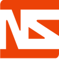

Work Experience
One North Interactive (06/2014-9/2014)
- Worked with front end development team to design websites and fix bugs and styling
- Implemented a web application that helps the architects to rate security for each client website
- Designed pieces of ascii art and embedded dynamic robots to prevent web crawlers
- Utilized Meteorjs to build fast prototypes and Drupal for dynamic content

Neosavvy NEXT Externship Program
- Shadowed a mentor and focused on test-driven development
- Visited other New York startups like Contently and Honest Buildings